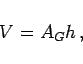
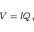

Prisma heißt ein Polyeder, das gleiche Grundflächen und Parallelogramme als Seitenflächen besitzt.
Ein gerades Prisma zeichnet sich durch senkrecht auf der Grundfläche stehende Kanten aus, ein reguläres Prisma dadurch, daß es gerade ist und ein regelmäßiges Vieleck zur Grundfläche hat. Für das Polyeder gilt:
|  | (3.120) |
| (3.121) |
| (3.122) |
Dabei ist p der Umfang eines zu den Kanten senkrechten ebenen Schnittes und l die Kantenlänge. Für ein dreiseitiges Prisma, dessen Grundflächen nicht parallel zueinander liegen, gilt
| (3.123) |
wobei Q ein senkrechter Querschnitt, a,b und c die Längen der parallelen Kanten sind.
Das Volumen eines n-seitigen Prismas mit nicht parallel zur Grundfläche abgeschnittener Deckfläche ist
|  | (3.124) |
wobei l die Länge der Geraden  ist, die die Schwerpunkte der Grundflächen miteinander verbindet und Q der zu dieser Linie senkrechte Querschnitt.
ist, die die Schwerpunkte der Grundflächen miteinander verbindet und Q der zu dieser Linie senkrechte Querschnitt.